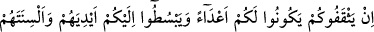
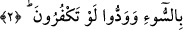

buyurmuş: “Ey Davûd! Nefsine karşı düşmanca davran. Çünkü ondan başka bu ülkede
bana karşı çıkan yoktur.”
Keşfü’l-esrar’da şöyle denilmiştir : Az bir askerle Rûm, Kayserden alınabilir. Ancak
yeryüzünün bütün evliyâları bir araya gelse nefsi bir kimseden alamaz. Zira nefiste
hileler çoktur. Ahmed Hadreveyh Belhî (r.a.) der ki; nefsimi türlü riyâzet ve
mücâhedelerle yenmiştim. Bir gün nefsim gazâya gitme isteği ile doldu, nefisten ibâdete
dâir bir istek olmayacağını bildiğim için bu duruma şaşırdım. Dedim ki; bu sözün
altında acaba hangi hile var? Yoksa nefsim kendisine devamlı oruç tutturduğum için,
artık dayanacak gücü kalmadığından sefere çıkıp orucu bozmak mı istiyor? Bunun
üzerine; “ey nefis, bu sefere gitsem de orucumu bozmayacağım” dedim. “Râzıyım,
tamam” dedi. Ben bu sefer; “yoksa gece namazına güç yetiremiyor da seferde uyumak
mı istiyor?” diye düşünerek; “seferde gece namazımı azaltmam, hazardaki gibi kılarım”
dedim. O yine “tamam, râzıyım” dedi. Sonra; “acaba bu sefere gitme sebebi insanlara
karışma isteğinden olmasın? Zira halvet ve uzleti tercih etmekteyim, acaba muradı
insanlarla sohbet etmek mi? diye düşündüm. Dedim ki; “ey nefis bu seferde nereye
gitsem, harabelerde konaklayacağım ve hiç kimseyi göremeyeceksin. O yine; “râzıyım,
olur” dedi. Artık nefse söyleyecek bir şey bulamadım, Allah’a yalvarıp onun hilesini
açığa vurması için tazarruda bulundum, sonunda Allah onun hilesi konusunda bana bilgi
verdi. Anladım ki bunu istemesinin sebebi, gazâda bir seferde ölmek ve bütün dünya
halkının Ahmed Hadreveyh gazâda şöyle şehit oldu denmesini sağlamakmış. Dedim ki;
“hem bu dünyada yaşarken münafıklık, hem de öldükten sonra ikiyüzlülük ayıplarıyla
nefsi yaratan Allah’ı tesbih ederim. Nefis ne bu dünyada, ne de âhirette İslam’ın
hakîkatini istiyor.” O vakit dedim ki; “ey nefs-i emmâre, Allah’a yemin olsun ki bu
gazâya gitmiyorum ve sen ibâdet ve tâat altında zünnâr bağlayacaksın. Burada yaptığım
riyâzât ve mücâhedeleri de arttırıyorum.”
Ben sizin saklı tuttuğunuzu da açığa vurduğunuzu da yâni enâniyet/benlik iddiânızdan
ve nefsin işi olduğu gibi kulluktan açığa çıkardığınızı da en iyi bilenim, demektir. Ebû
Hüseyn el-Verrak (r.h.) şöyle der: “İsyandan içinizde saklı tuttuğunuzu ve tâatten halk
için dışınıza vurduklarınızı en iyi bilenim demektir.”
2. Şâyet onlar sizi ele geçirirlerse, size düşman kesilecekler, size ellerini ve
dillerini kötülükle uzatacaklardır. Zaten inkâr edivermenizi istemektedirler.
“Şâyet onlar sizi ele geçirirlerse, size düşman kesilirler.” Ele geçirmek anlamındaki
sekaf kelimesi bir şeyi ustalıkla, bilerek yapmak ve almak demektir. Üstün gelmektir.
Daha sonraları burada olduğu gibi hazakat ve ustalık olmasa da idrak etmekte ve